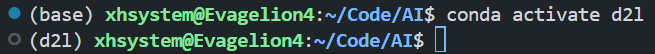
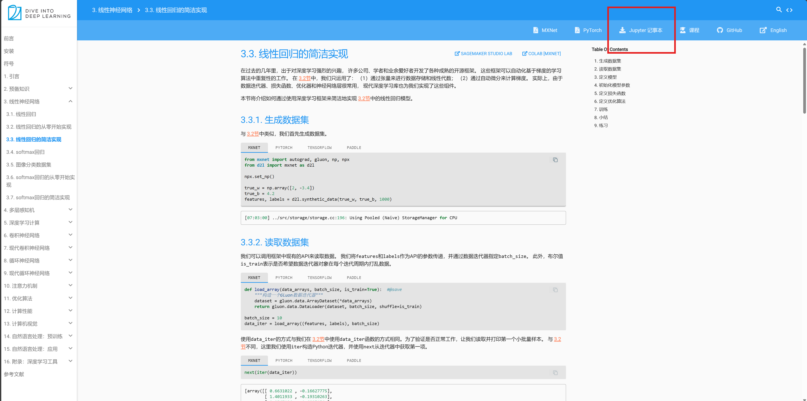
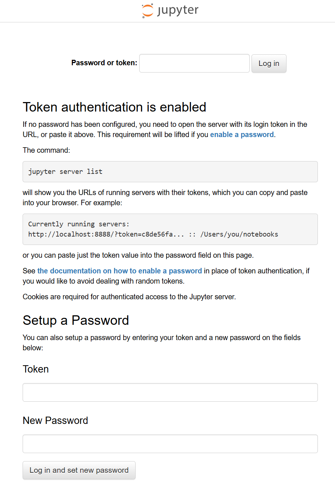
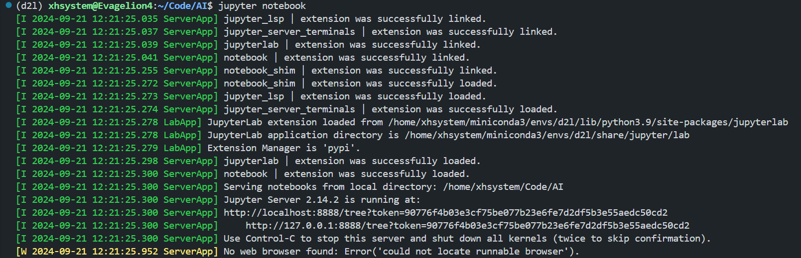
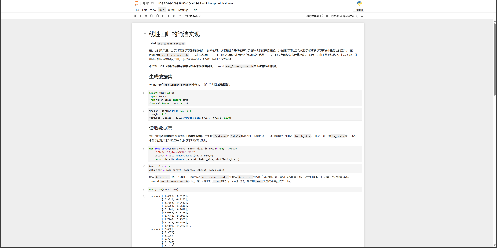

我们需要配置一个环境来运行 Python、Jupyter Notebook、相关库以及运行本书所需的代码，以快速入门并获得动手学习经验。
以下流程建立在我们第一节上机课安装的wsl2(ubantu)环境下
在Ubuntu系统中查看Python版本，你可以使用以下命令：
打开终端。 输入以下命令之一： 查看系统默认Python版本：
python --version
或者
python -V
如果系统中安装了多个Python版本，你可以使用python3来查看Python 3.x的版本：
python3 --version
或者
python3 -V
下载链接: miniconda
如果我们使用Linux，假设Python版本是3.9，将下载名称包含字符串“Linux”的bash脚本，并执行以下操作：
建议直接下载latest版本即可
# 文件名可能会更改
sh Miniconda3-py39_4.12.0-Linux-x86_64.sh -b
# 若下载的latest版本
sh Miniconda3-latest-Linux-x86_64.sh -b
接下来，初始化终端Shell，以便我们可以直接运行conda。
~/miniconda3/bin/conda init
现在关闭并重新打开当前的shell。并使用下面的命令创建一个新的环境：
conda create --name d2l python=3.9 -y
现在激活 d2l 环境：
conda activate d2l
PS:
助教尝试的时候使用的指令(仅供参考)
python3 --version
# 下载的文件为 Miniconda3-latest-Linux-x86_64.sh
sh Miniconda3-latest-Linux-x86_64.sh -b
~/miniconda3/bin/conda init
# 现在关闭并重新打开当前的shell。并使用下面的命令创建一个新的环境
conda create --name d2l python=3.10 -y
conda activate d2l
现在你可以看到你的终端大概如下:

出现了(base), 并在执行conda activate d2l后出现(d2l)
请先确定你的计算机是否装有NVIDIA GPU
安装(or 确认是否安装)CUDA
nvcc --version
若未安装
# 可能要占用比较大的空间
sudo apt install nvidia-cuda-toolkit
安装MXNet的GPU版本，首先需要知道已安装的CUDA版本。假设已安装CUDA 11.5版本，请执行以下命令：
pip install mxnet-cu115
可以根据CUDA版本更改如上mxnet-cu101的最后一位数字， 例如：CUDA 10.0是cu100， CUDA 9.0是cu90。
如果太慢了建议使用交大的镜像
pip install -i https://mirror.sjtu.edu.cn/pypi/web/simple mxnet-cu115
如果机器没有NVIDIA GPU或CUDA，可以按如下方式MXNet的CPU版本：
pip install mxnet==1.7.0.post1
安装d2l包
pip install d2l
在以下网站获取适合版本torch的安装指令
助教使用的
pip3 install torch torchvision torchaudio --index-url https://download.pytorch.org/whl/cu115
conda deactivate
下次再使用时，请再执行
conda activate d2l
在动手学习深度学习网站下载jupyter文件压缩包
如图所示

将其解压到你认为合适的工作目录
jupyter notebook
会打开一个网页地址是localhost:8888
如图所示，会要求你输入token

token 在命令行中找到

会显示一个网址 token=...... token为=号后面的内容
将token复制到网页
你就能看到当前目录
然后选择某一个.ipynb文件打开，就能看到类似如下界面

点击run/三角形图标即可按照示例顺序运行代码
若要关闭 在命令行ctrl+c再按提示输入y即可
其中 部分代码存在前置依赖，即书本靠前章节创建了一些函数等，后面的章节直接使用了，若未运行过之前章节则会遇到错误
故需要按照书本顺序将前置的代码运行一遍
后面注有文件路径的为可在jupyter运行的内容, 未标注的为推荐阅读内容